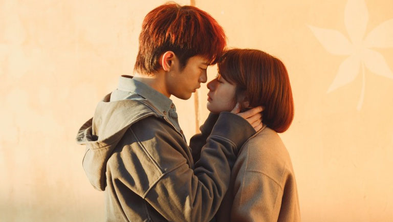

Bienvenidos a K-Drama Land
¡Exploremos juntos el mundo de los Dramas coreanos!

Explora un espacio donde los amantes de los dramas coreanos pueden encontrar todo lo necesario para disfrutar de sus historias favoritas.
Aquí encontrarás listas de dramas organizadas por géneros, como romance, acción, comedia y mucho más, lo que hará que encontrar tu próxima serie sea mucho más fácil.
Sumérgete en nuestras listas de las mejores OST, esas canciones que hacen que cada escena se quede grabada en tu corazón y te acompañen mucho después de que termine el episodio.
También podrás explorar nuestras secciones de películas coreanas, donde te comparto las películas más recomendadas para los que también aman el cine coreano.
En este espacio les voy a compartir todo sobre mis dramas coreanos favoritos: desde los clásicos inolvidables hasta los estrenos más recientes. Van a encontrar recomendaciones por género (romance/comedia, suspenso, fantasía y más), reseñas personales, mis OST preferidos, y también algunas películas coreanas que vale la pena ver. Si son fans de los K-Dramas (o si quieren empezar a ver uno y no saben cuál), espero que les pueda ayudar a encontrar su próximo Kdrama favorito. Pueden explorar todas las secciones desde el menú del inicio.
¡Gracias por estar acá y espero que lo disfruten tanto como yo disfruté crearlo!